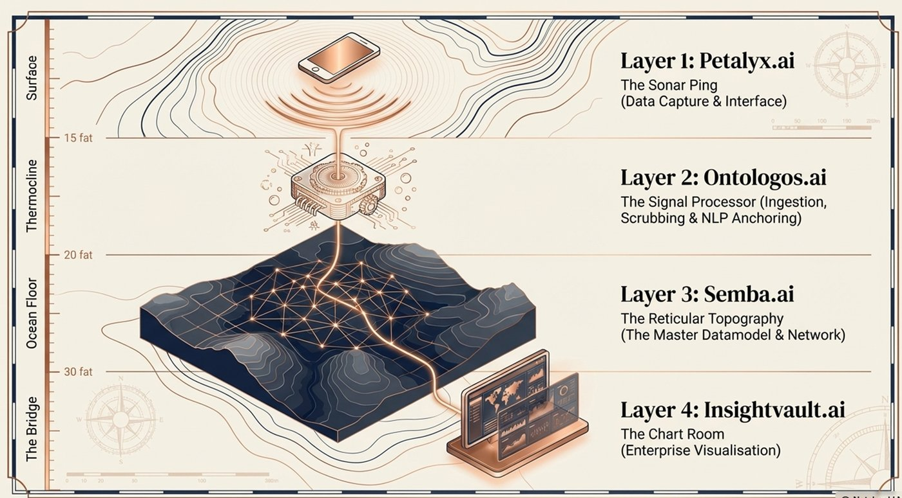
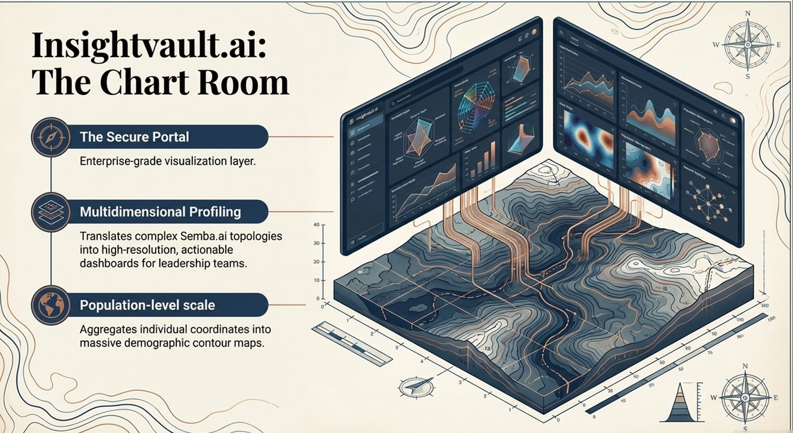

Four layers, from capture on the user's device through to enterprise visualisation.

Data capture and interface. The word-association task users interact with directly.
Ingestion, scrubbing, and NLP anchoring of the raw signal.
The master datamodel and network — the reticular topology underlying every reading.
Enterprise-grade visualisation. Translates the underlying topology into dashboards for leadership teams, aggregating individual coordinates into population-level views.
